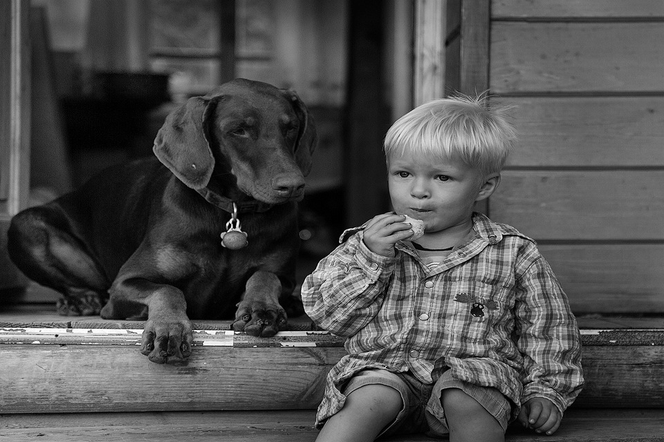

Это изображение будет пропорционально изменять масштаб, так как его ширина составляет 100% от размера контейнера, для которого задана максимальная ширина 960px.
Эти изображения отображаются рядом друг с другом. Они будут пропорционально изменяться в зависимости от размера окна просмотра, при эом сохраняя свои позиции.
Эти изображения будут отображаться в одну колонку на небольших устройствах (например, смартфонах), в две колонки на средних устройствах (например, планшет), и в четыре колонки на экранах (например, ПК или ноутбук).
Это изображение всегда будет иметь 100% ширину, потому как его контейнеру не опредлено значение максимальной ширины (max-width) .